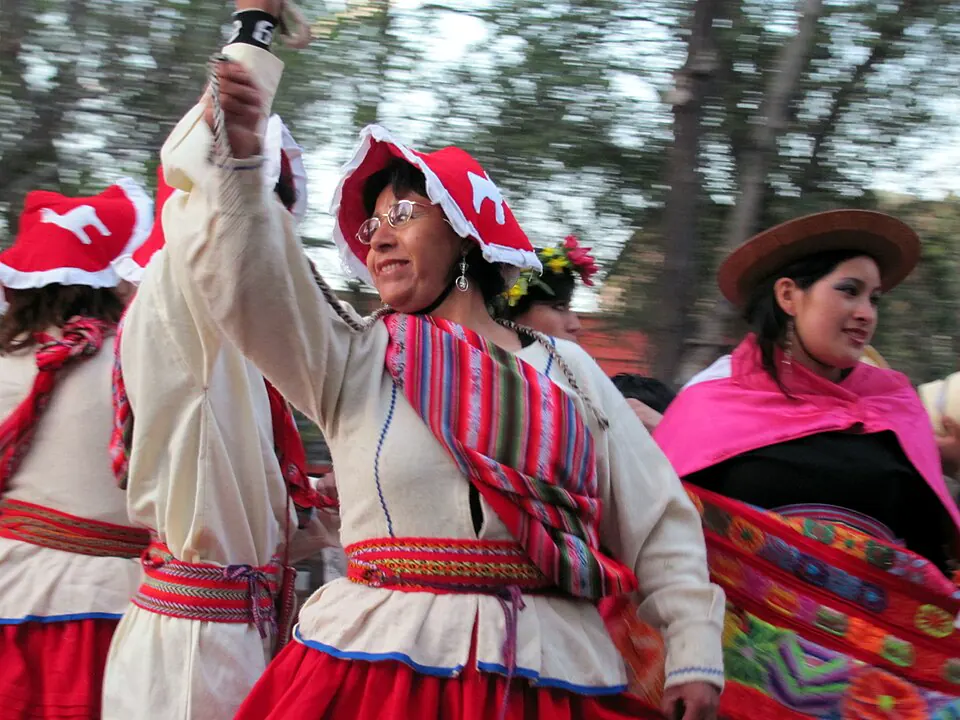

Migración del siglo XXI

Chile ha recibido inmigrantes en distintas épocas, como los colonos europeos del siglo XIX (ver Colonización alemana en Llanquihue), pero las primeras décadas del siglo XXI trajeron la mayor inmigración de su historia reciente, sobre todo desde otros países de América Latina. Según el Instituto Nacional de Estadísticas (INE), en el Censo 2017 las personas nacidas en el extranjero eran el 4,4 % de la población; en el Censo 2024 llegaron a 1.608.650, el 8,8 %. Es decir, su peso se duplicó en siete años.
También cambió su origen. En 2017 el grupo más numeroso era el peruano (25 %); en 2024 lo fue el venezolano, con un 41,6 % del total, seguido por quienes nacieron en Perú (14,5 %), Colombia (12,3 %), Bolivia (10,5 %), Haití (5,0 %) y Argentina (4,4 %). La crisis en Venezuela explica buena parte de ese cambio: entre quienes llegaron entre 2017 y 2019, seis de cada diez habían nacido allí. El INE destaca otros rasgos: el 51,7 % son mujeres, el 83,1 % tiene entre 15 y 64 años y la proporción de menores de 15 años subió de 10,6 % a 13,4 %, señal de que muchas familias se asentaron. El 60 % vive en la Región Metropolitana, pero en proporción a su población las regiones con más inmigrantes son Tarapacá (23,2 %), Antofagasta (19,7 %) y Arica y Parinacota (14,9 %).
La ley también cambió. Hasta 2021 regía el Decreto Ley 1.094, dictado en 1975 durante la Dictadura militar, cuando la inmigración era mucho menor. La Ley 21.325 de Migración y Extranjería, publicada el 20 de abril de 2021, lo reemplazó, reconoció derechos y deberes de las personas migrantes, ordenó nuevas categorías de residencia y creó el Servicio Nacional de Migraciones.
La migración es hoy uno de los temas más discutidos del país. Los ingresos por pasos no habilitados en la frontera norte, en especial en 2021, provocaron crisis humanitarias y tensiones con comunidades locales, y el debate político se divide entre quienes priorizan el control de fronteras y quienes ponen el acento en la regularización y la integración. Los datos del INE muestran, a la vez, que se trata de una población mayoritariamente en edad de trabajar y mucho más joven que la nacida en Chile, en un país que envejece. Como en otras épocas, la llegada de migrantes ha traído discriminación, pero también nuevas comidas, músicas, idiomas y formas de vida.
Versión para niños
Chile siempre ha recibido personas de otros países. En este siglo llegaron muchas más, sobre todo desde Venezuela, Perú, Colombia, Bolivia y Haití. Vinieron buscando trabajo, seguridad o reunirse con su familia. Hoy casi una de cada diez personas que viven en Chile nació en otro país, y muchos niños y niñas comparten la sala de clases con compañeros que llegaron de lejos. Sus comidas, músicas y palabras ya son parte de la vida en Chile.
Para maestros
Nivel sugerido: 2° medio (adaptable a 6° básico)
Objetivo: Analizar con datos oficiales la migración reciente hacia Chile, sus causas y sus efectos, y reflexionar sobre la convivencia en una sociedad diversa.
Preguntas para la clase:
- ¿Cómo cambió entre 2017 y 2024 el origen de las personas inmigrantes en Chile?
- ¿Por qué crees que en Tarapacá, Antofagasta y Arica y Parinacota la proporción de inmigrantes es mayor que en el resto del país?
- ¿Qué podemos hacer en el curso y en la escuela para que todas las personas se sientan parte de la comunidad?
Actividad (20–30 min): Con las cifras del segundo párrafo de esta nota, los estudiantes construyen un gráfico de barras con los seis principales países de origen en 2024 y escriben tres conclusiones basadas en los datos, no en opiniones. Luego comparan la ley de 1975 con la de 2021 según el tercer párrafo. Se recomienda no pedir a estudiantes migrantes que expongan su historia personal; si alguien quiere compartir, que sea voluntario.
Fuentes sugeridas: Instituto Nacional de Estadísticas (INE); Biblioteca del Congreso Nacional (BCN); Servicio Nacional de Migraciones.
Objetivos de Aprendizaje (Currículum Nacional)
- 2° básico · HI02 OA 04 Reconocer y dar ejemplos de la influencia y aportes de inmigrantes … latinoamericanas a la diversidad de la sociedad chilena, a lo largo de su historia
- 2° medio · HI2M OA 25 Reconocer la diversidad inherente a las sociedades como manifestación de la libertad y de la dignidad humana … sea por raza o etnia, nacionalidad
- 3° o 4° medio (Chile y la región latinoamericana) · FG-CHLA-3y4-OAC-01 Analizar procesos sociales y culturales recientes de Chile y América Latina tales como migraciones, cambios demográficos y urbanización
- 3° o 4° medio (Mundo global) · FG-MGLO-3y4-OAC-01 Analizar procesos migratorios contemporáneos en distintas regiones del mundo, considerando múltiples causas, principales características, impactos en la sociedad de origen y de destino
Fuentes
Revisión humana pendiente. Cómo se revisa · Reportar un error
Cómo citar: Historia de Chile. (2026). Migración del siglo XXI. En Historia de Chile: atlas y línea de tiempo. https://moises-salgado.github.io/historia-de-chile/momento/migracion-del-siglo-xxi.html